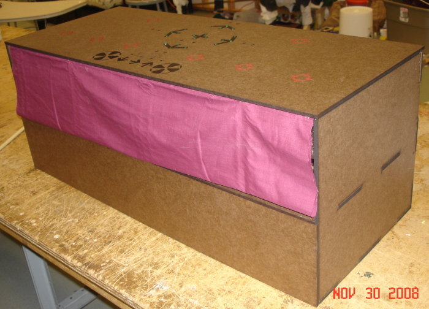

Project Overview
Our concept was to completely remove the aspect of touch from controlling the Atari FLashback II console. Our Vintage Controller Replacement is controlled by the location of the user's hands. They are placed inside the controller box, 1"-2" above the bottom. Four infrared light detector/emitter pairs per hand sense the location of the user's hands. The controller is operated with both hands, by covering different combinations of sensors to activate video game controls. Players get feedback from LEDs on the top that light up when a game control is activated, and when the cheat goes on.
The top of the box conceals the players' hands in order to make controlling the game more difficult and interesting. Markings on the top of the box indicate where the sensors are so that using the controller is not completely impossible. Each hand must move to a specific place in order to activate a control. A fun variation is to have two people use the controller at the same time, forcing them to coordinate to use the correct control. It results in a lot of yelling.
If the user inputs a specific series of commands (down, right, up) within three seconds, the cheat code is activated. The cheat code turns on fans that blow air up from the bottom. The air only comes up where the sensors are located, which helps the player's hands move to the right places. The cheat goes off when the Atari is turned off.
Gems of Wisdom
- Spend a lot of time brainstorming and planning early on. It will save your team much more time later on.
- Completely plan and design your project before you start building anything. Reworking or remaking parts after a design change is frustrating and wastes a lot of time.
- Make sure your power supply is on before you start debugging your circuit.
- Stock up on components you think you may need while the TAs are in the office.
Bill of Materials
Total Cost: $71.19
Electronic Components
| Part | Qty | Cost per Unit | Total Cost |
|---|---|---|---|
| Tape Sensor | 8 | $2.00 | $16.00 |
| 2N7000 | 12 | $0.25 | $3.00 |
| IRLZ34N | 2 | $0.25 | $0.50 |
| LM324 | 2 | $0.50 | $1.00 |
| Capacitors | 4 | $0.10 | $0.40 |
| Resistors | 29 | $0.01 | $0.29 |
| LEDs | 24 | $0.15 | $3.60 |
Connectors and Wiring
| Part | Qty | Cost per Unit | Total Cost |
|---|---|---|---|
| Molex 8-pin Connectors | 5 | $0.40 | $2.00 |
| Molex 4-pin Connectors | 10 | $0.25 | $2.50 |
| Molex 2-pin Connectors | 26 | $0.10 | $2.60 |
| Molex Connector Pins | 76 | $0.05 | $3.80 |
| Braided Wire | 50 ft | $0.10 | $5.00 |
| Heat Shrink Tube | 5 gt | $0.10 | $0.50 |
| Jumper Wire Kit | 1 | $10.00 | $10.00 |
Structural, Mechanical, and Cosmetic
| Part | Qty | Cost per Unit | Total Cost |
|---|---|---|---|
| Masonite | 1 | $20.00 | $20.00 |
| Tape Sensor Brackets | 8 | $1.00 | $8.00 |
| Link Depot 92mm x 92mm x 25mm 12VDC Fan | 4 | $5.99 | $23.96 |